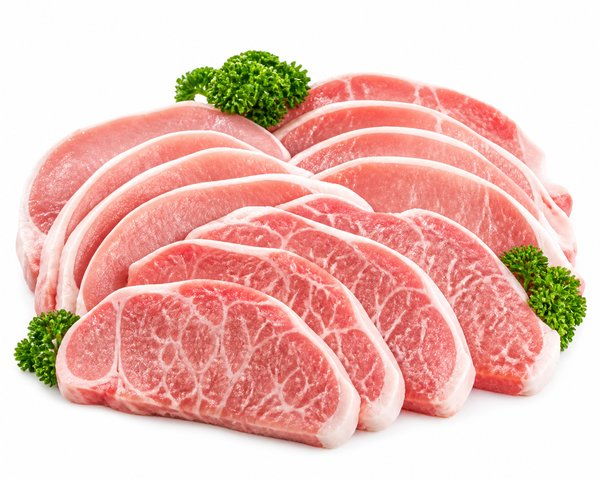
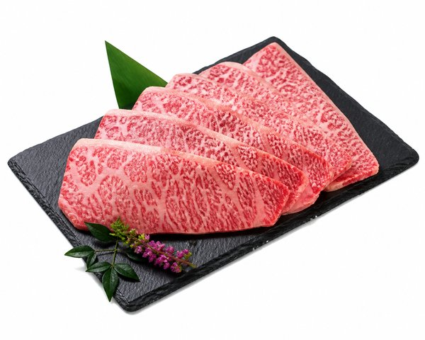
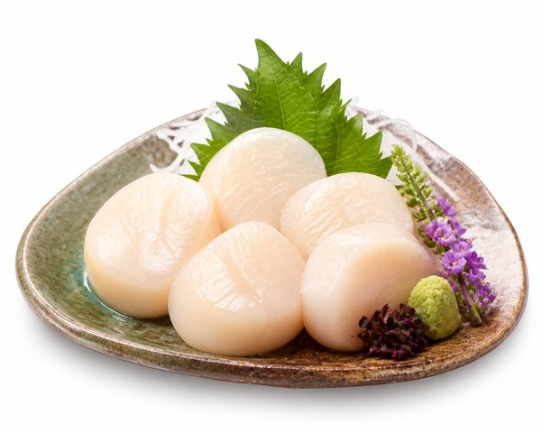
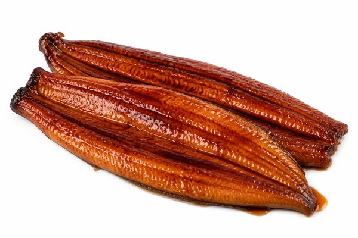
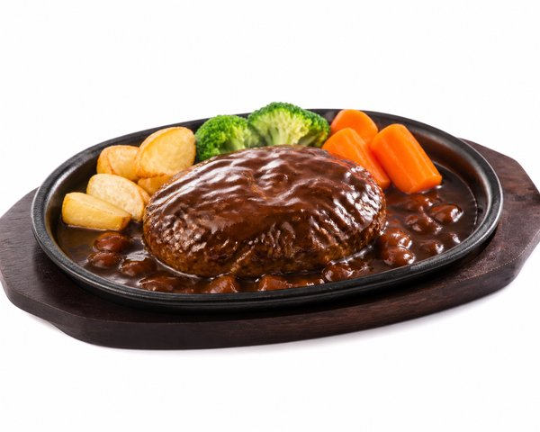
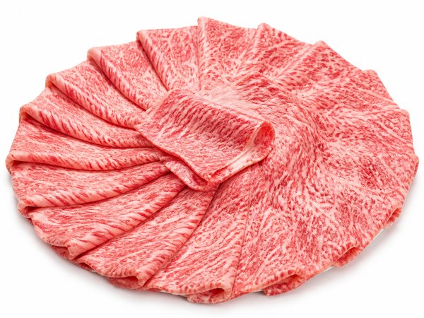
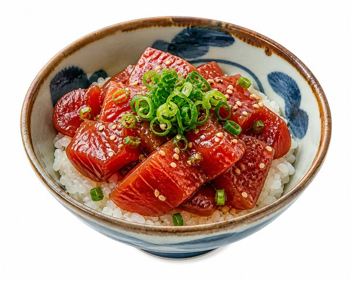
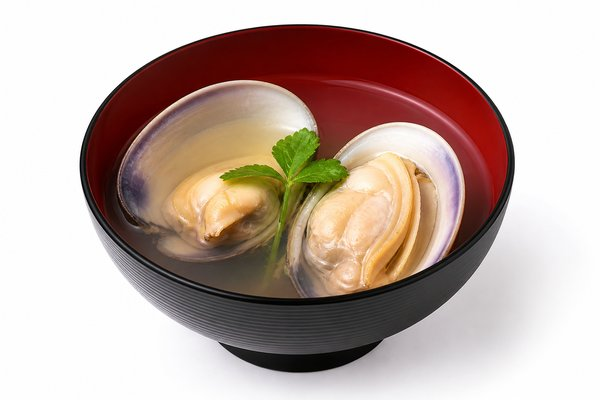
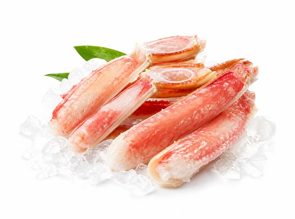

【2026年最新】年末駆け込みふるさと納税！還元率・満足度最強の極上肉＆海鮮おすすめ10選
11月から12月にかけてピークを迎える「ふるさと納税の駆け込み寄附」。限度額まであと数万円残っているけれど、どの返礼品を選べば失敗しないか迷っていませんか？
年末年始のごちそうや、日々の食費節約に直結する「お肉」「海鮮」は、楽天ふるさと納税の中でも圧倒的な人気とレビュー数を誇る鉄板カテゴリです。
本記事では、寄附金額に対するボリューム、鮮度、味の満足度を徹底比較し、絶対に後悔しない極上の肉＆海鮮返礼品おすすめ10選をご紹介します。
- おすすめ10選 スペック・特徴比較表
- BEST 1｜いくら醤油漬け（鮭卵）400g (200g×2パック)
- BEST 2｜都城産豚「高城の里」わくわく3.6kgセット
- BEST 3｜佐賀県産黒毛和牛 赤身切り落とし 1,000g (500g×2)
- BEST 4｜オホーツク産ホタテ玉冷大 1kg (生食用特大サイズ)
- BEST 5｜霧島湧水うなぎ 蒲焼き 特大3尾 (計500g以上) タレ・山椒付
- BEST 6｜鉄板焼ハンバーグ デミグラスソース 20個 (温めるだけ)
- BEST 7｜山形牛 肩ロースすき焼き用 600g (A4〜A5等級)
- BEST 8｜天然まぐろ 漬け丼の素 10食分 (メバチ・キハダ)
- BEST 9｜桑名産天然はまぐり 詰合せ 500g (中〜大サイズ)
- BEST 10｜カット生ずわい蟹 700g (総重量1kg・刺身OK)
- 【読者限定】無料体験キャンペーン
- まとめ：生活をラクにする最初の一歩
| 順位 | 商品名 | ブランド | 最大の特徴・おすすめ理由 | 総合評価 |
|---|---|---|---|---|
| BEST 1 | いくら醤油漬け（鮭卵）400g (200g×2パック) | 北海道白糠町（ふるさと納税） | 粒立ちが美しく生臭さが一切ない極上の醤油漬け | 4.9 ★ |
| BEST 2 | 都城産豚「高城の里」わくわく3.6kgセット | 宮崎県都城市（ふるさと納税） | 3.6kgという圧倒的なボリュームで毎日の晩ごはん作りに大活躍 | 4.9 ★ |
| BEST 3 | 佐賀県産黒毛和牛 赤身切り落とし 1,000g (500g×2) | 佐賀県上峰町（ふるさと納税） | 黒毛和牛ならではの芳醇な香りと柔らかさをたっぷり堪能できる | 4.8 ★ |
| BEST 4 | オホーツク産ホタテ玉冷大 1kg (生食用特大サイズ) | 北海道紋別市（ふるさと納税） | 肉厚で濃厚な甘みと歯ごたえが抜群の特大サイズ | 4.9 ★ |
| BEST 5 | 霧島湧水うなぎ 蒲焼き 特大3尾 (計500g以上) タレ・山椒付 | 鹿児島県志布志市（ふるさと納税） | 箸ですっと切れるほど柔らかな肉質と上品な脂の乗り | 4.8 ★ |
| BEST 6 | 鉄板焼ハンバーグ デミグラスソース 20個 (温めるだけ) | 福岡県飯塚市（ふるさと納税） | 20個入りの大ボリュームで忙しい日のメインおかずとして重宝 | 4.8 ★ |
| BEST 7 | 山形牛 肩ロースすき焼き用 600g (A4〜A5等級) | 山形県寒河江市（ふるさと納税） | A4〜A5等級認定の美しい霜降りで年末年始の食卓が最高潮に盛り上がる | 4.8 ★ |
| BEST 8 | 天然まぐろ 漬け丼の素 10食分 (メバチ・キハダ) | 静岡県焼津市（ふるさと納税） | 流水解凍5分ですぐ食べられるので休日のランチや夜食に最高 | 4.8 ★ |
| BEST 9 | 桑名産天然はまぐり 詰合せ 500g (中〜大サイズ) | 三重県桑名市（ふるさと納税） | 他の産地とは一線を画すプリプリの肉厚食感と濃厚な出汁の旨み | 4.9 ★ |
| BEST 10 | カット生ずわい蟹 700g (総重量1kg・刺身OK) | 福井県敦賀市（ふるさと納税） | 殻がカットされているので包丁やハサミを使わず手軽に食べられる | 4.8 ★ |
いくら醤油漬け（鮭卵）400g (200g×2パック)

楽天ふるさと納税の全返礼品ランキングで長年首位を争う絶対王者。北海道産の完熟鮭卵を秘伝のタレで漬け込み、プチッと弾ける食感と濃厚な旨みが口いっぱいに広がります。200gずつの小分けで使いやすさも抜群。
- 粒立ちが美しく生臭さが一切ない極上の醤油漬け
- 贅沢ないくら丼が4〜5杯分たっぷり楽しめる大満足ボリューム
- 200g×2パックの小分け冷凍で使いたい分だけ解凍可能
- 年末は駆け込み注文が集中し配送時期が年明けになる場合がある
都城産豚「高城の里」わくわく3.6kgセット

焼肉用、とんかつ用、生姜焼き用、切り落とし、豚ミンチなど多彩な部位が計3.6kgも届くコスパモンスター返礼品。自然豊かな都城で育った豚肉はアクが少なく脂身に甘みがあり、日々の食費を強力に節約してくれます。
- 3.6kgという圧倒的なボリュームで毎日の晩ごはん作りに大活躍
- 真空パックで冷凍庫の隙間にすっきり収まり保存しやすい
- 豚特有の臭みがなく脂の甘みが際立つ極上の肉質
- 届く前に冷凍庫のスペースをしっかり空けておく必要がある
佐賀県産黒毛和牛 赤身切り落とし 1,000g (500g×2)

佐賀の肥沃な大地で育った黒毛和牛の上質な赤身肉を1kg詰め合わせた人気返礼品。サシと赤身のバランスが絶妙で、牛丼や肉じゃが、炒め物に使うだけでいつもの家庭料理が料亭の味に格上げされます。
- 黒毛和牛ならではの芳醇な香りと柔らかさをたっぷり堪能できる
- 脂っこすぎない上質な赤身なので胃もたれせず最後まで美味しい
- 500g×2パックに分かれており家族の食事にちょうど良いサイズ
- 切り落としのため肉の形状や大きさに若干のバラつきがある
オホーツク産ホタテ玉冷大 1kg (生食用特大サイズ)

流氷がもたらす豊富なプランクトンを食べて育ったオホーツク海産の特大ホタテ貝柱。急速バラ凍結されているため、必要な分だけ取り出して解凍し、贅沢なお刺身やバター醤油焼き、フライで楽しめます。
- 肉厚で濃厚な甘みと歯ごたえが抜群の特大サイズ
- 1粒ずつバラ凍結されており解凍の手間が驚くほど簡単
- 生食用の新鮮さでカルパッチョや海鮮丼にもぴったり
- 粒が大きいため一度に解凍しすぎると食べきれないことがある
霧島湧水うなぎ 蒲焼き 特大3尾 (計500g以上) タレ・山椒付

霧島山系の清らかな湧水で丹精込めて育てられた国産大隅うなぎ。4回タレづけ焼きを繰り返すことで外は香ばしく中はふっくらジューシーに仕上がっています。湯煎やトースターで温めるだけで専門店のうな重が完成。
- 箸ですっと切れるほど柔らかな肉質と上品な脂の乗り
- 1尾あたり約170g前後の特大サイズでどんぶりからはみ出る迫力
- 合成着色料や保存料不使用の秘伝タレと山椒が個包装で付属
- 人気返礼品のため年末は発送まで2〜3週間かかる場合がある
鉄板焼ハンバーグ デミグラスソース 20個 (温めるだけ)

牛と豚の合挽き肉の旨みを閉じ込め、こだわりのデミグラスソースで煮込んだ大人気ハンバーグ。個包装パックのまま湯煎するだけで、肉汁があふれる本格洋食屋のハンバーグが手軽に味わえます。
- 20個入りの大ボリュームで忙しい日のメインおかずとして重宝
- ソースがたっぷり入っておりパスタやオムライスにかけても絶品
- 冷凍保存で賞味期限が長く小分け調理がしやすい
- 電子レンジ調理ではなく湯煎解凍が推奨されている
山形牛 肩ロースすき焼き用 600g (A4〜A5等級)

寒暖差の大きい山形の豊かな気候が育んだ極上の黒毛和牛。きめ細やかなサシが入った肩ロースは、すき焼きの割り下にさっとくぐらせるだけでとろけるような柔らかさと肉の甘みが広がります。
- A4〜A5等級認定の美しい霜降りで年末年始の食卓が最高潮に盛り上がる
- 濃厚なコクがありつつも後味がくどくない上質な脂質
- 桐箱風の上品なパッケージで贈答用にも選ばれる高級感
- 霜降りが多めなので赤身重視の方には少しリッチすぎる場合がある
天然まぐろ 漬け丼の素 10食分 (メバチ・キハダ)

日本屈指の漁港・焼津で水揚げされた天然まぐろを、特製醤油ダレにじっくり漬け込んだ海鮮丼の素。流水解凍わずか5分で、あたたかいご飯の上に乗せるだけで本格まぐろ丼が完成します。
- 流水解凍5分ですぐ食べられるので休日のランチや夜食に最高
- 1人前ずつ平べったいパックになっており冷凍庫の隙間に収納可能
- タレの味が染み込んでおり刻み海苔やワサビ、卵黄と相性抜群
- 1食分のボリュームはやや軽めなので大盛り派は2袋推奨
桑名産天然はまぐり 詰合せ 500g (中〜大サイズ)

木曽三川の豊かな栄養が注ぐ伊勢湾で育った全国ブランド「桑名の天然はまぐり」。肉厚な身と濃厚で上品な貝出汁は唯一無二で、お吸い物、焼きはまぐり、酒蒸しで格別の美味しさを誇ります。
- 他の産地とは一線を画すプリプリの肉厚食感と濃厚な出汁の旨み
- 砂抜き処理済みで届いてすぐに調理できる手軽さ
- お祝い事やお正月の祝い膳を華やかに彩る最高級の逸品
- 天然もののため水揚げ状況によって配送まで少し時間を要する
カット生ずわい蟹 700g (総重量1kg・刺身OK)

面倒な殻剥きが不要なビードロカット加工済みの生ずわい蟹。高鮮度急速冷凍により解凍後はお刺身でも食べられ、カニ鍋、カニしゃぶ、バター焼きで贅沢な冬の味覚を心ゆくまで堪能できます。
- 殻がカットされているので包丁やハサミを使わず手軽に食べられる
- 生食可能な鮮度でお刺身のとろける甘みを味わえる
- カニ鍋にした後の〆の雑炊が濃厚なカニ出汁で絶品
- 解凍しすぎると黒変（黒く変色）するため直前の半解凍が推奨
日々の暮らしや買い物を楽しむなら、人気雑誌1,000誌以上がスマホやタブレットで読み放題の「楽天マガジン」が圧倒的におすすめです！初回31日間は完全無料で、無料期間中に解約すれば料金は1円もかかりません。
＼ 読者負担0円！雑誌1,000誌読み放題 ／楽天マガジン 31日間無料お試しを詳しく見る →
💡 まとめ：生活をラクにする最初の一歩
ふるさと納税の枠をしっかり使い切ることは、実質2,000円の自己負担で極上グルメを楽しみながら住民税・所得税を控除できる最高のマネー術です。特に年末は人気返礼品から順に受付終了や年内発送締め切りとなるため、お早めの寄附手続きをおすすめします。
楽天市場では「5と0のつく日」や「お買い物マラソン」などのキャンペーンに合わせて購入すると、ポイント還元が最大化してお得に手に入ります。ぜひチェックしてみてくださいね。